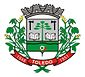
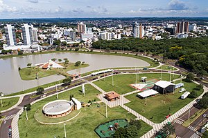

Toledo-PR
Bandeira de Toledo:

Brasão de Toledo:

Vista da Cidade de Toledo:

Localização de Toledo no Mapa:

Localização da cidade de Toledo:
Coordenadas: 24° 42' 50" S 53° 44' 34" O
País: Brasil
Unidade federativa: Paraná
Região metropolitana: Toledo
Distância até a capital: 540 km
Historia:
Fundação: 14 de dezembro de 1951 (69 anos)
Aniversário: 14 de dezembro
Administração:
Prefeito(a): Luis Adalberto Beto Lunitti Pagnussatt[2] (MDB, 2021 – 2024)
Vereadores: 19
Caracerísticas Geográficas:
Área total[3]: 1 197,016 km²
População total (estimativa IBGE/2021[4]): 144 601 hab.
Posição PR: 12º
Densidade: 120,8 hab./km²
Clima: Subtropical (Cfa)
Altitude: 550 m
Fuso horário: Hora de Brasília (UTC−3)
Indicadores:
IDH (PNUD/2010[5]): 0,768 — alto
Posição PR: 10º
Gini (estatísticas IBGE/2010[6]): 0,471
PIB (IBGE/2015[7]): R$ 4,872,319 mil
Posição BR: 197º
PIB per capita (IBGE/2015[7]): R$ 36 889,99
Outras Informações:
Padroeiro(a): Cristo Rei
Apelido(s): "A capital do Agronegócio do Paraná", "Toledo Cidade-Labor"
Gentílico: toledano